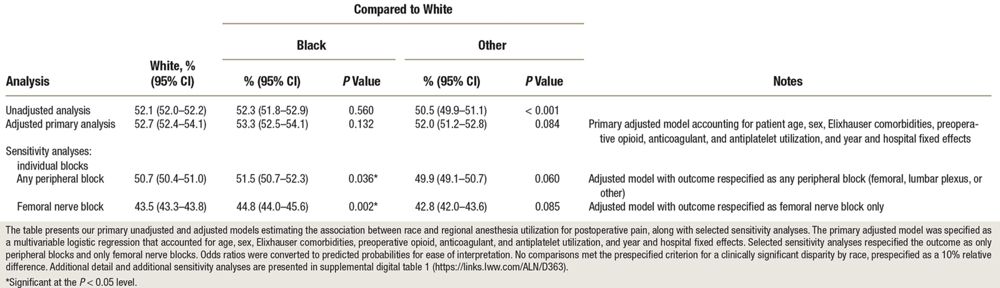
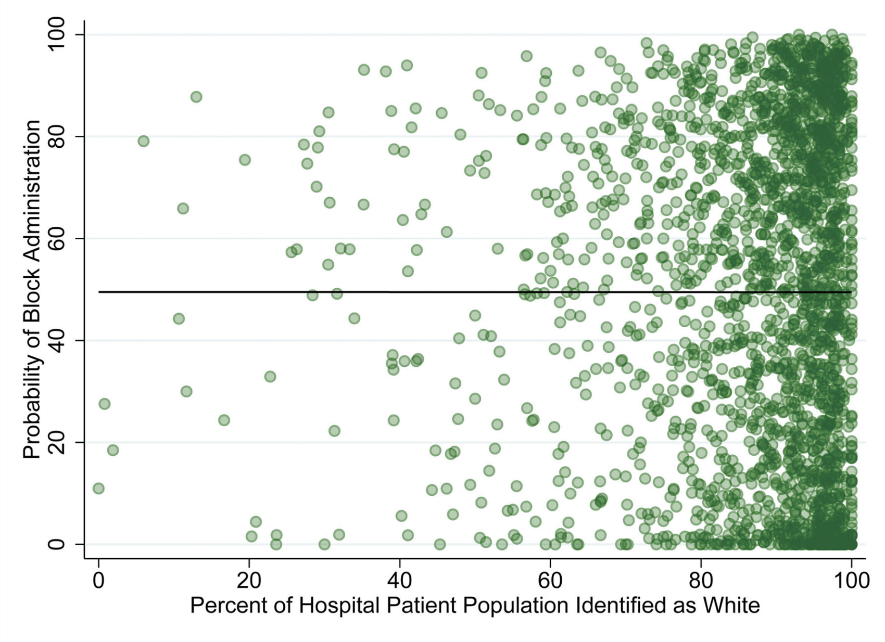

Pre-Doctoral Research
Association of Patient Race and Hospital with Utilization of Regional Anesthesia for Treatment of Postoperative Pain in Total Knee Arthroplasty
Abstract
Background: Regional anesthesia for total knee arthroplasty has been deemed high priority by national and international societies, and its use can serve as a measure of healthcare equity. The association between utilization of regional anesthesia for postoperative pain and race and hospital in patients undergoing total knee arthroplasty was estimated. The hypothesis was that Black patients would be less likely than White patients to receive regional anesthesia, and that variability in regional anesthesia would more likely be attributable to the hospital where surgery occurred than race.
Methods: This study used Medicare fee-for-service claims for patients aged 65 yr or older who underwent primary total knee arthroplasty between January 1, 2011, and December 31, 2016. The primary outcome was administration of regional anesthesia for postoperative pain, defined as any peripheral or neuraxial block. The primary exposure was self-reported race. Clinical significance was defined as a relative difference of 10% in regional anesthesia administration.
Results: Data from 733,406 cases across 2,507 hospitals were analyzed. Black patients did not have a statistically different probability of receiving a regional anesthetic compared to White patients. Findings were robust to alternate specifications of the exposure and outcome. Analysis of variance revealed that 42.0% of the variation in block administration was attributable to hospital, compared to less than 0.01% to race, after adjusting for other patient-level confounders.
Conclusions: Race was not associated with administration of regional anesthesia in Medicare patients undergoing primary total knee arthroplasty. Variation in the use of regional anesthesia was primarily associated with the hospital where surgery occurred.
Figures and Tables


Related Material
Citation
Dixit, A. A., Sekeres, G., Mariano, E. R., Memtsoudis, S. M., & Sun, E. C. 2024. "Association of patient race and hospital with utilization of regional anesthesia for treatment of postoperative pain in total knee arthroplasty: A retrospective analysis using Medicare claims." Anesthesiology 130(2): 220-230. doi: 10.1097/ALN.0000000000004827.
BibTeX
@article{dixitSekeresMarianoMemtsoudisSun2024,
author = {Anjali A. Dixit and Gabriel Sekeres and Edward R. Mariano and Stavros M. Memtsoudis and Eric C. Sun},
year = {2024},
title = {Association of Patient Race and Hospital with Utilization of Regional Anesthesia for Treatment of Postoperative Pain in Total Knee Arthroplasty: A Retrospective Analysis Using Medicare Claims},
journal = {Anesthesiology},
volume = {130},
number = {2},
pages = {220--230},
url = {https://doi.org/10.1097/ALN.0000000000004827}
}